Stratigraphic diagrams
Dewey Dunnington
2019-12-07
Source:vignettes/strat_diagrams.Rmd
strat_diagrams.RmdThis vignette covers creating stratigraphic diagrams using ggplot2, highlighting the helpers contained within tidypaleo. The ggplot2 framework was chosen because it is quite flexible and can be used to create almost any time-stratigraphic diagram except ones that involve multiple axes (we can have a fight about whether or not those are appropriate anyway, but if you absolutely need to create them I suggest you look elsewhere). It will help considerably if you are already familiar with ggplot2 (a great tutorial can be found here).
First, you will need to load the packages. For this tutorial, I will use tidypaleo, and the tidyverse (this includes ggplot2). Later, I will use patchwork to create more complex plots (you can install this from GitHub using devtools::install_packages("thomasp85/patchwork"), and mudata2 because it contains more example data that is useful for illustrating plot data from multiple cores. I prefer the theme_bw() theme for ggplot2 plots, so I will set this here as well. Setting the base font size to a small value (8 pt in this case) helps with strat diagrams.
Next, you will need to load the example data. This vignette uses 3 datasets that are already in the correct format for plotting. These are datasets in the tidypaleo package: alta_lake_geochem, keji_lakes_plottable, and halifax_lakes_plottable. These represent three common dataset types for which stratigraphic plots are created.
Geochemical stratigraphic plots
Geochemical stratigraphic plots include any kind of plot where each panel of the plot should be scaled to the minimum and maximum of the data. This includes (most) non-species abundance data. The example data, alta_lake_geochem, is a data frame in parameter-long (one row per measurement) form (you may need to use gather() to get your data into this form, which you can learn about in this tutorial). These measurements are from Alta Lake, British Columbia (Canada), and you can read more about them in the journal article.
alta_lake_geochem
#> # A tibble: 192 x 9
#> location param depth age value stdev units n zone
#> <chr> <chr> <dbl> <dbl> <dbl> <dbl> <chr> <int> <chr>
#> 1 ALGC2 Cu 0.25 2015. 76 NA ppm 1 Zone 3
#> 2 ALGC2 Cu 0.75 2011. 108. 4.50 ppm 3 Zone 3
#> 3 ALGC2 Cu 1.25 2008. 158 NA ppm 1 Zone 3
#> 4 ALGC2 Cu 1.75 2003. 169 NA ppm 1 Zone 3
#> 5 ALGC2 Cu 2.5 1998. 161 NA ppm 1 Zone 3
#> 6 ALGC2 Cu 3.5 1982. 129 NA ppm 1 Zone 3
#> 7 ALGC2 Cu 4.5 1966. 88.7 3.86 ppm 3 Zone 2
#> 8 ALGC2 Cu 5.5 1947. 65 NA ppm 1 Zone 2
#> 9 ALGC2 Cu 6.5 1922. 62.3 9.53 ppm 3 Zone 2
#> 10 ALGC2 Cu 7.5 1896. 48 NA ppm 1 Zone 2
#> # … with 182 more rowsPlotting a single core with ggplot() involves several steps:
- The initial
ggplot()call, where we set which columns will get mapped to thexandyvalues for each layer. - Two layers:
geom_lineh()andgeom_point(). We usegeom_lineh()because our plots will be oriented vertically (geom_line()is designed for horizontal plots). - Specify how data are divided between facets using
facet_geochem_gridh()(we use_gridh()to orient the panels horizontally rather than vertically). - Reverse the Y-axis, so that a depth of 0 is at the top.
- Remove the X label, and set the Y label to “Depth (cm)”.
alta_plot <- ggplot(alta_lake_geochem, aes(x = value, y = depth)) +
geom_lineh() +
geom_point() +
scale_y_reverse() +
facet_geochem_gridh(vars(param)) +
labs(x = NULL, y = "Depth (cm)")
alta_plot
That’s it! Of course, there are many modifications that can be made, which are covered in the next few sections.
Adding annotations
It is common to highlight certain depths or ages on strat diagrams, or to add things to various places on a plot. This is accomplished by adding additional layers to the plot. For example, highlighting the depth at which the zones change (according to the paper, this is at 4 cm and 16 cm).

The geom_hline() function creates its own data using the yintercept argument, but other geometries require us to create our own data. For example, highlighting the middle zone using geom_rect() would look like this:
zone_data <- tibble(ymin = 4, ymax = 16, xmin = -Inf, xmax = Inf)
alta_plot +
geom_rect(
mapping = aes(ymin = ymin, ymax = ymax, xmin = xmin, xmax = xmax),
data = zone_data,
alpha = 0.2,
fill = "blue",
inherit.aes = FALSE
)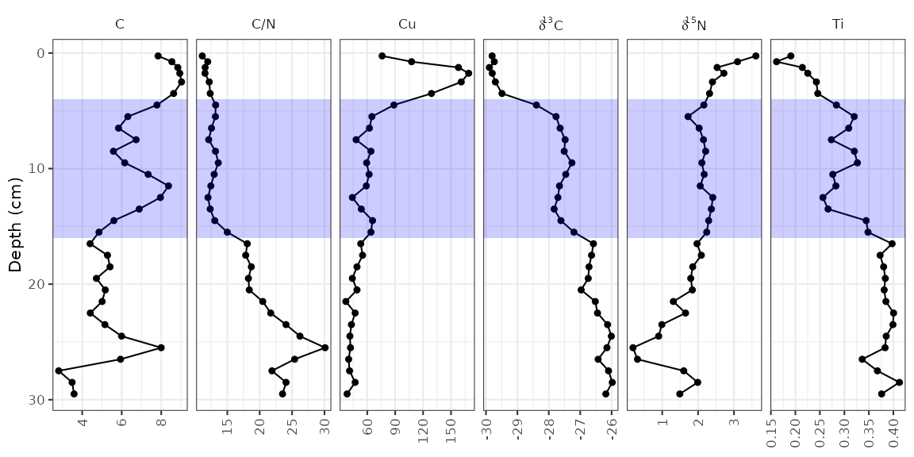
So far, each new layer we have added has been propogated to all facets. To restrict annotations to a specific facet, we need to include the facetting column (in this case, param) in the layer data. The element copper (Cu) has standards set by the Canadian government (ISQG of 35.7 ppm), and highlighting values that are outside that range can be done in a similar way to highlighting the middle zone.
cu_standard_data <- tibble(param = "Cu", xmin = 35.7, xmax = Inf, ymin = -Inf, ymax = Inf)
alta_plot +
geom_rect(
mapping = aes(ymin = ymin, ymax = ymax, xmin = xmin, xmax = xmax),
data = cu_standard_data,
alpha = 0.2,
fill = "red",
inherit.aes = FALSE
)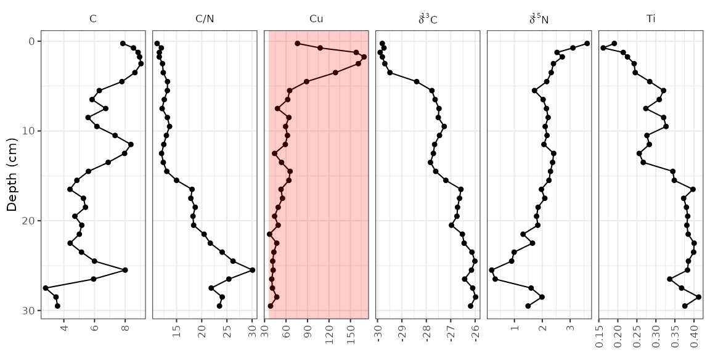
To highlight the syntax that changed from the original plot, I’ve been using alta_plot + ..., however with layers such as these, it may be desirable to have the annotation appear under the original data. To do this, you would have to add your annotation layer (geom_rect()) before your data layer (geom_lineh() and geom_point()).
Error bars
In the alta_lake_geochem data frame, there is a column for standard deviation (stdev). You can plot these values as error bars using geom_errorbarh().
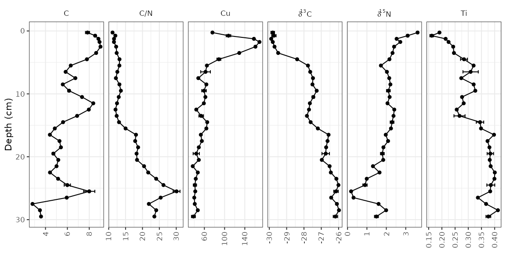
Reordering facets
To control the order of the facets, the column on which they are facetted (param) must be a factor(), where the levels indicate the order. I suggest using fct_relevel() to do this, so that you only need to specify which items should go first. Usually I do this using a pipe (%>%) and mutate() to avoid assigning any intermediate variables.
alta_lake_geochem %>%
mutate(param = fct_relevel(param, "Ti", "Cu", "C/N")) %>%
ggplot(aes(x = value, y = depth)) +
...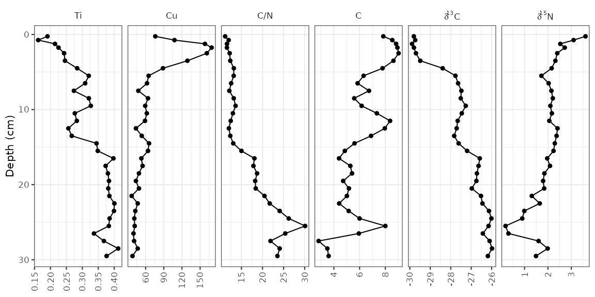
Plotting a subset of the data
The halifax_geochem data frame was designed so that it is a reasonable number of parameters to plot at one time. Usually you will have a data frame with many more parameters, which you can subset using filter() before calling ggplot(). Usually I do this using a pipe (%>%) to avoid assigning any intermediate variables.
alta_lake_geochem %>%
filter(param %in% c("d15N", "d13C", "C/N")) %>%
ggplot(aes(x = value, y = depth)) +
...
Using a y-axis with ages and depths
When plotting a single core, it is good practice to plot both ages and depths in the core. In ggplot2, this comes as a second axis generated by a helper function, scale_y_depth_age(), that uses an age_depth_model() to produce a second axis. For Alta Lake, the age depth model as published is included in the alta_lake_bacon_ages object. It’s possible to set the age breaks using the age_breaks argument, and the labels using the age_labels argument (this is useful for adding error information to ages on a second axis). The axis title can be set using the age_name argument.
alta_adm <- age_depth_model(
alta_lake_bacon_ages,
depth = depth_cm,
age = 1950 - age_weighted_mean_year_BP
)
alta_plot +
scale_y_depth_age(
alta_adm,
age_name = "Age (Year AD)"
)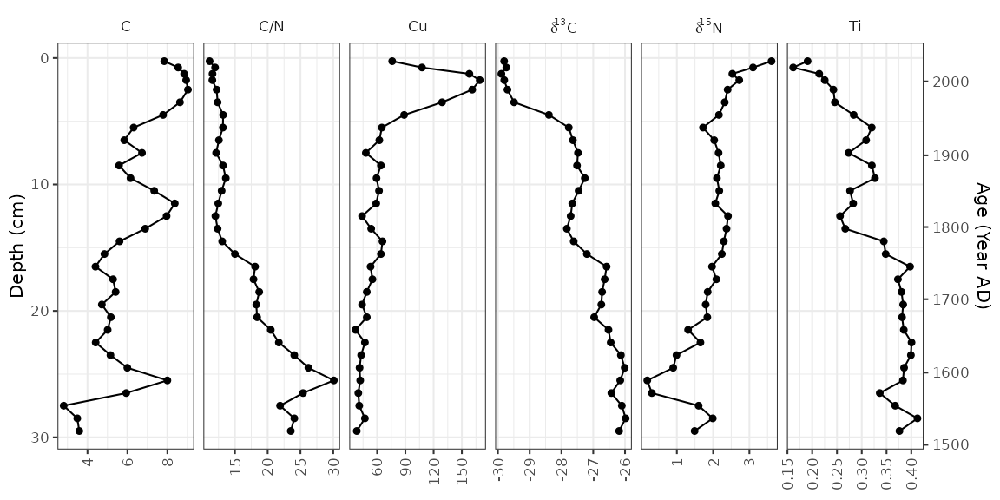
Adding units to facet labels
Ideally, we’d like to specify the unit in which each of these parameters was measured. This can be done (1) by renaming each parameter before it gets to ggplot(), or (2) by using the units argument of the facet_geochem_*() functions. I suggest using the second option because it maintains the order of the parameters that you’ve chosen, and keeps the automatic reformatting of d13C. The units argument takes a named character vector, which you can create using c("parameter" = "unit"). If most paremeters are in the same unit, you can pass the default unit using default_unit = "unit", and if you need to suppress a unit for an item, you can use NA.
alta_plot +
facet_geochem_gridh(
vars(param),
units = c("C/N" = NA, "Cu" = "ppm", "d13C" = "‰", "d15N" = "‰"),
default_units = "%"
)
Multiple cores
So far we’ve plotted one core. That’s great, but often there is more than one core that needs to be plotted. There are two ways to go about this depending on how you would like identical parameters for each lake to be compared: using facet_geochem_gridh() will stretch the axis limits to fit values from both cores, and creating (and combining) two separate plots using patchwork::wrap_plots() will result in each panel stretching to the min/max of the data for that parameter. We’ll illustrate both of these using some other data from Long Lake, Nova Scotia, that is contained in the mudata2 package.
library(mudata2)
combined_data <- long_lake %>%
tbl_data() %>%
bind_rows(alta_lake_geochem) %>%
filter(param %in% c("C/N", "d13C", "d15N"))
combined_data
#> # A tibble: 147 x 14
#> dataset location param depth value sd units zone n n_detect
#> <chr> <chr> <chr> <dbl> <dbl> <dbl> <chr> <chr> <int> <int>
#> 1 long_l… LL PC2 C/N 1 15.4 NA <NA> Unit… 1 1
#> 2 long_l… LL PC2 C/N 6 15.8 0.290 <NA> Unit… 2 2
#> 3 long_l… LL PC2 C/N 11 24.0 NA <NA> Unit… 1 1
#> 4 long_l… LL PC2 C/N 16 21.4 NA <NA> Unit… 1 1
#> 5 long_l… LL PC2 C/N 21 23.2 NA <NA> Unit… 1 1
#> 6 long_l… LL PC2 C/N 26 25.4 NA <NA> Unit… 1 1
#> 7 long_l… LL PC2 C/N 43 27.2 NA <NA> Unit… 1 1
#> 8 long_l… LL PC2 C/N 48 24.3 NA <NA> Unit… 1 1
#> 9 long_l… LL PC2 C/N 53 30.2 NA <NA> Unit… 1 1
#> 10 long_l… LL PC2 C/N 63 24.4 NA <NA> Unit… 1 1
#> # … with 137 more rows, and 4 more variables: min_value <dbl>, max_value <dbl>,
#> # age <dbl>, stdev <dbl>First we’ll go over the facet_geochem_gridh() approach, which adds location as another grouping variable. This will align parameters with themselves vertically, with one row on the plot per core. This usually the best option, as it makes values from one plot to another be directly comparable.
ggplot(combined_data, aes(x = value, y = depth)) +
geom_lineh() +
geom_point() +
scale_y_reverse() +
facet_geochem_gridh(vars(param), grouping = vars(location), scales = "free") +
labs(x = NULL, y = "Depth (cm)")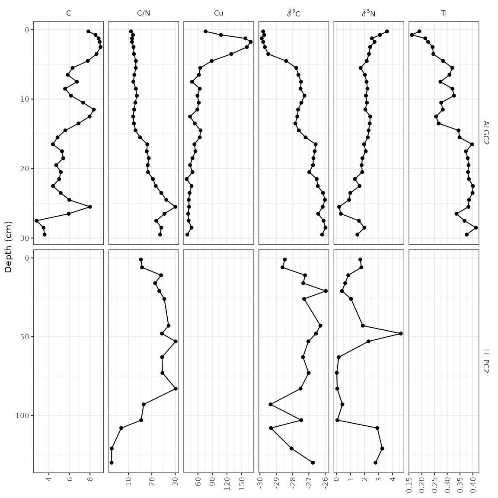
The other way to do this is to create two separate plots, and combine them using the patchwork package. This is a good option when values from one core to another are so different that placing them on the same axis results in trends being obscured, or when ages and depths are absolutely necessary for both plots (using scale_y_depth_age() doesn’t work when combining locations using a facet).
alta_plot_1 <- combined_data %>%
filter(location == "ALGC2") %>%
ggplot(aes(x = value, y = depth)) +
geom_lineh() +
geom_point() +
scale_y_reverse() +
facet_geochem_gridh(vars(param), scales = "free") +
labs(x = NULL, y = "Depth (cm)", title = "Alta Lake")
long_plot_2 <- combined_data %>%
filter(location == "LL PC2") %>%
ggplot(aes(x = value, y = depth)) +
geom_lineh() +
geom_point() +
scale_y_reverse() +
facet_geochem_gridh(vars(param), scales = "free") +
labs(x = NULL, y = "Depth (cm)", title = "Long Lake")
library(patchwork)
wrap_plots(alta_plot_1, long_plot_2, ncol = 1)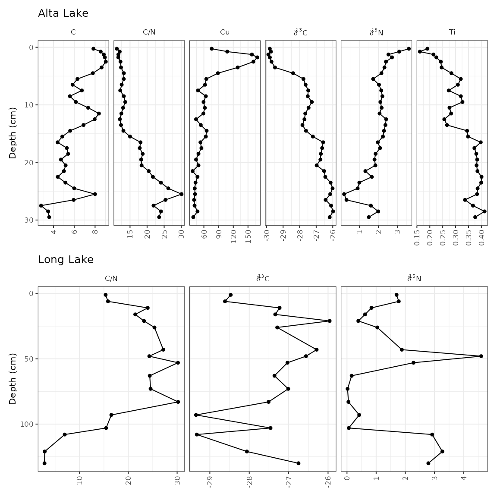
Adding a dendrogram
It’s fairly common to see a CONISS dendrogram at the right of plots, and so tidypaleo wouldn’t be complete if it couldn’t make that happen. For a variety of technical reasons, you have to specify that you need depth mapped to the y aesthetic for both layer_zone_boundaries() and layer_dendrogram(). Note that you’ll have to do CONISS using nested_chclust_coniss(), which uses the rioja package to do the constrained cluster analysis. By default, this will calculate the number of plausible zones based on a broken stick simulation.
coniss <- alta_lake_geochem %>%
nested_data(qualifiers = c(age, depth), key = param, value = value, trans = scale) %>%
nested_chclust_coniss()
alta_plot +
layer_dendrogram(coniss, aes(y = depth), param = "CONISS") +
layer_zone_boundaries(coniss, aes(y = depth))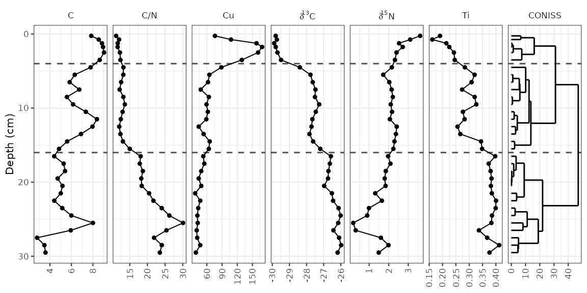
Using facet_geochem_wraph()
If you are familiar with facet_grid() in ggplot2, you will notice that facet_geochem_gridh() has done a few things differently, including automatically renaming d13C and d15N to the proper formatting. This function also rotates axis labels, because this is the only sure-fire way to make sure they don’t overlap. You can un-rotate them using rotate_axis_labels = 0, and you can wrap panels in a defined number of rows or columns using facet_geochem_wraph(). This works well for plotting a larger number of parameters when there is only one core involved.
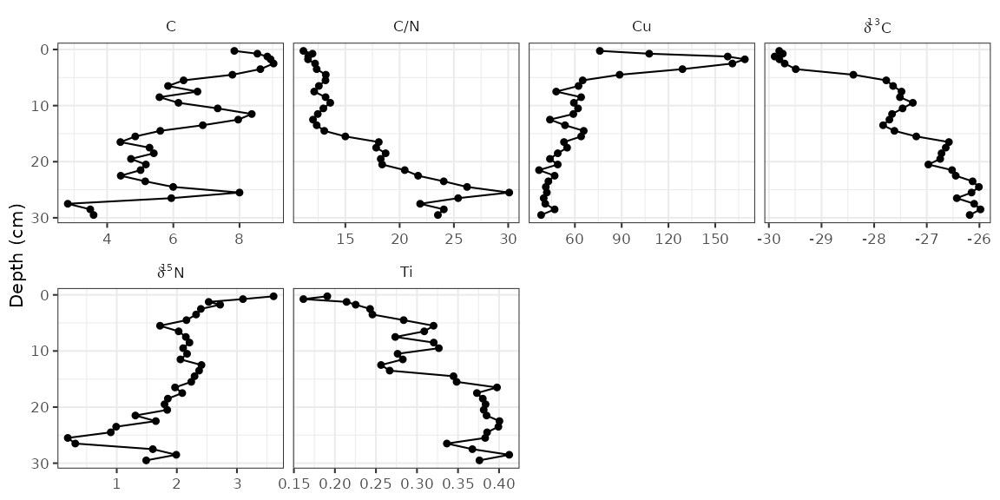
Going horizontal
Most stratigraphic diagrams are vertical, which is a reflection on the orientation of the core from which the data came. In many cases (especially when age is one of the axes), it may be adventageous to have the plots be horizontal, with time running from left to right along the x-axis. A few things need to change from our original plot, including the mapping, the line geometry, and the facet specification. Here I’ve used facet_geochem_grid() to stack the plots vertically, but you could also use facet_geochem_wrap().
ggplot(alta_lake_geochem, aes(x = age, y = value)) +
geom_line() +
geom_point() +
scale_y_reverse() +
facet_geochem_grid(vars(param)) +
labs(x = "Age (Year AD)", y = NULL)
Species abundance stratigraphic plots
If our data is relative species abundance, there are a few more restrictions on the plot: each facet must represent values such that 10% abundance on one facet is equal to 10% in another facet, and facet names are often long enough that they must be rotated. The sample data for these exercises is keji_lakes_plottable, which again is in the form of one row per measurement. This dataset contains two lakes, Beaverskin Lake and Peskawa Lake, both located within Keji National Park, Nova Scotia, Canada (Ginn et al. 2007).
data("keji_lakes_plottable")
keji_lakes_plottable
#> # A tibble: 202 x 5
#> location depth taxon count rel_abund
#> <chr> <dbl> <fct> <dbl> <dbl>
#> 1 Beaverskin Lake 0.125 Asterionella ralfsii var. americana (l… 0 0
#> 2 Beaverskin Lake 0.125 Aulacoseira distans 7 3.02
#> 3 Beaverskin Lake 0.125 Aulacoseira lirata 4 1.72
#> 4 Beaverskin Lake 0.125 Cyclotella stelligera 8 3.45
#> 5 Beaverskin Lake 0.125 Tabellaria flocculosa (strain III) 0 0
#> 6 Beaverskin Lake 0.125 Other 213 91.8
#> 7 Beaverskin Lake 0.375 Asterionella ralfsii var. americana (l… 0 0
#> 8 Beaverskin Lake 0.375 Aulacoseira distans 8 3.25
#> 9 Beaverskin Lake 0.375 Aulacoseira lirata 5 2.03
#> 10 Beaverskin Lake 0.375 Cyclotella stelligera 14 5.69
#> # … with 192 more rowsThe code to generate the plot is similar to our previous plots, except we use geom_col_segsh() (which instead of points or a path, draws lines connected to the x-axis), and facet_abundanceh() (which takes care of rotating facet labels, partially italicizing them, and setting the scales for each panel to start at 0.
keji_plot <- ggplot(keji_lakes_plottable, aes(x = rel_abund, y = depth)) +
geom_col_segsh() +
scale_y_reverse() +
facet_abundanceh(vars(taxon), grouping = vars(location)) +
labs(x = "Relative abundance (%)", y = "Depth (cm)")
keji_plotMost of the modifications you can make on these plots are identical to the modifications you can make on non-abundance plots (see previous section), except for a few that we describe below.
Different styles
There are a few famous styles for abundance plots, because a few existing programs (like Tilia, C2, and rioja) have some very specific defaults that show up on repeat in the literature. These styles can be replicated by changing or adding to geom_col_segsh(). For example, the classic Tilia “area” style for pollen diagrams:
ggplot(keji_lakes_plottable, aes(x = rel_abund, y = depth)) +
geom_areah() +
scale_y_reverse() +
facet_abundanceh(vars(taxon), grouping = vars(location)) +
labs(x = "Relative abundance (%)", y = "Depth (cm)")
Or for rioja-style diagrams, use geom_col_segsh() plus geom_lineh():
ggplot(keji_lakes_plottable, aes(x = rel_abund, y = depth)) +
geom_col_segsh() +
geom_lineh() +
scale_y_reverse() +
facet_abundanceh(vars(taxon), grouping = vars(location)) +
labs(x = "Relative abundance (%)", y = "Depth (cm)")
Exaggerating low-abundance taxa
It’s common to see some kind of geometry on abundance diagrams exaggerating low-abundance variation. You can use the *_exaggerate() varieties of geom_lineh(), geom_areah(), and geom_point() to display this information without affecting the scales. If you want to include it only for certain taxa, you can pass data = keji_lakes_plottable %>% filter(...) to only include certain measurements.
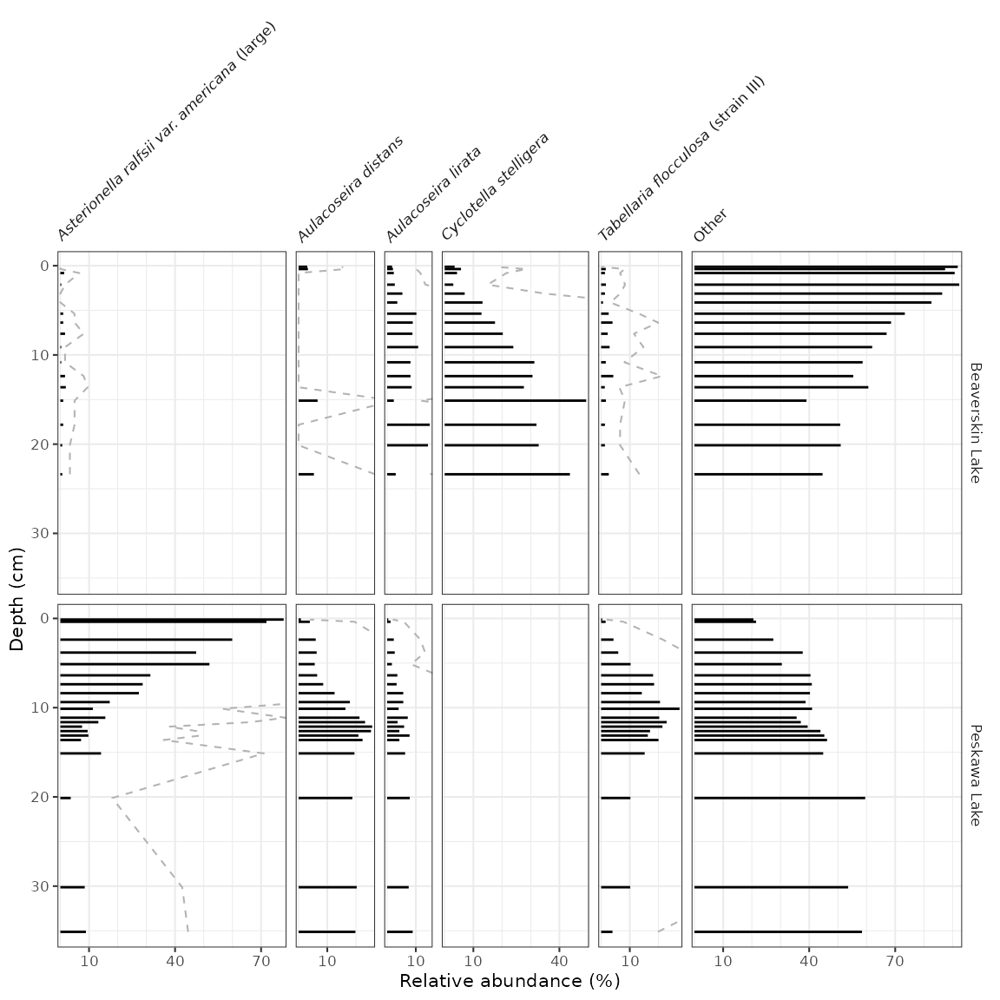
Adding non-abundance data
To add non-abundance data in the same figure, we need to create two plots and combine them using patchwork’s wrap_plots() function. In this example, I’m going to use PCA scores, computed by the nested_prcomp() function, and get them into parameter-long form using gather(). Note that when I create the plots, I make sure the labels still exist, and then I nix the labels inbetween the two plots using a few theme() modifications. It’s important to make sure that the panel labels and scale lables are the same before removing them!
keji_pca_scores <- keji_lakes_plottable %>%
group_by(location) %>%
nested_data(qualifiers = depth, key = taxon, value = rel_abund, trans = sqrt) %>%
nested_prcomp() %>%
unnest(qualifiers, scores) %>%
gather(key = component, value = value, starts_with("PC")) %>%
filter(component %in% c("PC1", "PC2"))
#> Warning: unnest() has a new interface. See ?unnest for details.
#> Try `df %>% unnest(c(qualifiers, scores))`, with `mutate()` if needed
keji_pca_plot <- ggplot(keji_pca_scores, aes(x = value, y = depth)) +
geom_lineh() +
geom_point() +
scale_y_reverse() +
facet_geochem_gridh(vars(component), grouping = vars(location)) +
labs(x = NULL)
library(patchwork)
wrap_plots(
keji_plot +
theme(strip.background = element_blank(), strip.text.y = element_blank()),
keji_pca_plot +
theme(axis.text.y.left = element_blank(), axis.ticks.y.left = element_blank()) +
labs(y = NULL),
nrow = 1,
widths = c(4, 1)
)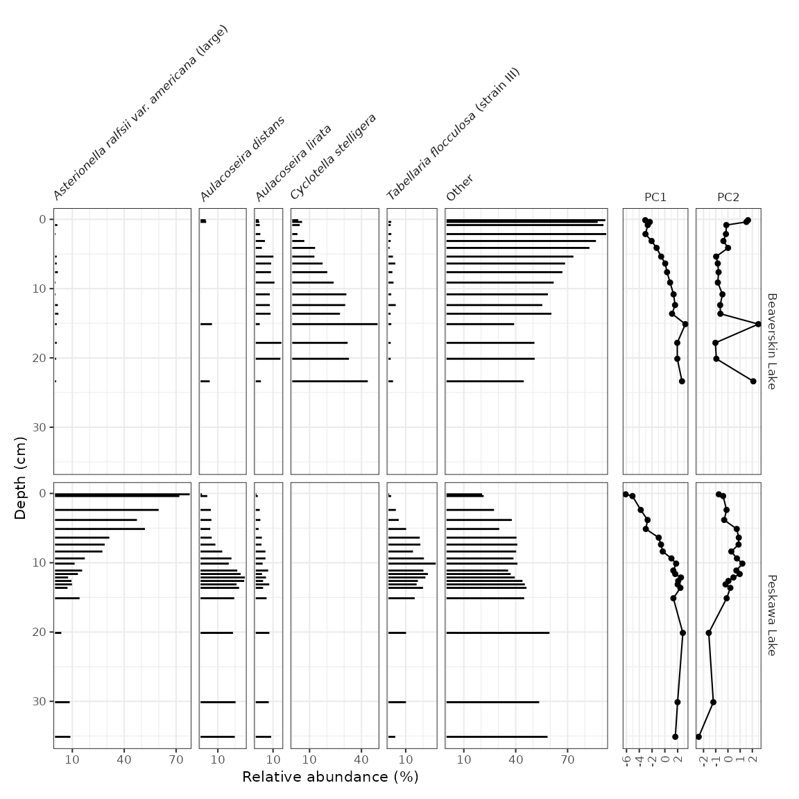
Adding dendrograms
Adding a CONISS (or other) dendrogram created using nested_chclust_coniss() can be done in two ways: if there is already a non-abundance plot that exists, the dendrogram can be added to that plot using layer_dendrogram(). If there is not already a non-abundance plot, we need to create that plot. Then, the two plots can be combined using patchwork’s wrap_plots().
keji_coniss <- keji_lakes_plottable %>%
group_by(location) %>%
nested_data(qualifiers = depth, key = taxon, value = rel_abund) %>%
nested_chclust_coniss()
library(patchwork)
# method 1: use existing non-abundance plot
wrap_plots(
keji_plot +
theme(strip.background = element_blank(), strip.text.y = element_blank()),
keji_pca_plot +
layer_dendrogram(keji_coniss, component = "CONISS", aes(y = depth)) +
theme(axis.text.y.left = element_blank(), axis.ticks.y.left = element_blank()) +
labs(y = NULL),
nrow = 1,
widths = c(2, 1)
)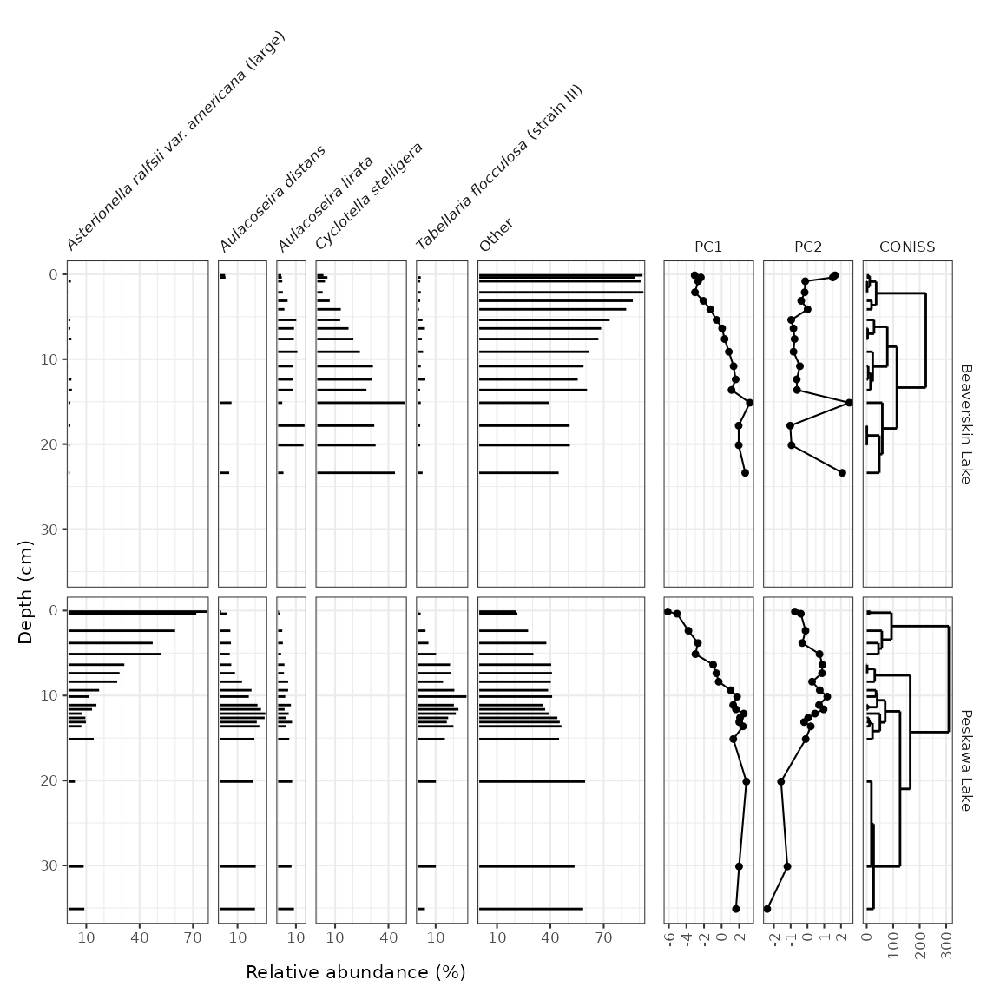
# method 2: create a standalone plot for CONISS
coniss_plot <- ggplot() +
layer_dendrogram(keji_coniss, aes(y = depth)) +
scale_y_reverse() +
facet_geochem_gridh(vars("CONISS"), grouping = vars(location)) +
labs(x = NULL)
wrap_plots(
keji_plot +
theme(strip.background = element_blank(), strip.text.y = element_blank()),
coniss_plot +
theme(axis.text.y.left = element_blank(), axis.ticks.y.left = element_blank()) +
labs(y = NULL),
nrow = 1,
widths = c(6, 1)
)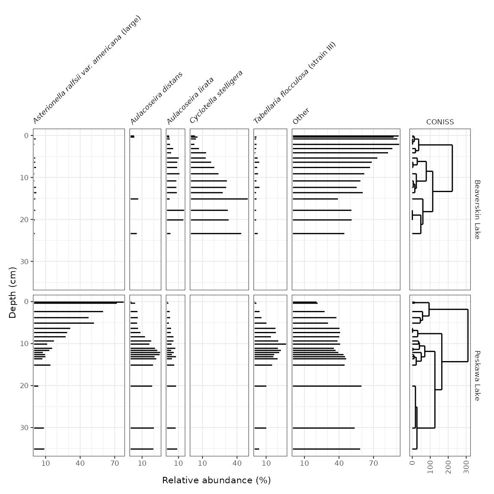
Top/bottom/spatial diagrams
So far we have looked at data that have depth as an axis. Another sample strategy includes collecting cores with a small number of samples in each (such as top/bottom, or sometimes just a surface sample). A sample dataset of this type was collected by Ginn et al. (2015) in lakes near Halifax, Nova Scotia. A subset of these measurements can be found in the halifax_lakes_plottable data frame.
data("halifax_lakes_plottable")
halifax_lakes_plottable
#> # A tibble: 114 x 5
#> location sample_type taxon count rel_abund
#> <chr> <chr> <fct> <dbl> <dbl>
#> 1 Anderson Lake bottom Aulacoseira distans 26 4.65
#> 2 Anderson Lake bottom Eunotia exigua 13.5 2.42
#> 3 Anderson Lake bottom Fragilariforma exigua 6.5 1.16
#> 4 Anderson Lake bottom Tabellaria fenestrata 23 4.11
#> 5 Anderson Lake bottom Tabellaria flocculosa (strain IV) 21 3.76
#> 6 Anderson Lake bottom Other 469 83.9
#> 7 Anderson Lake top Aulacoseira distans 8.5 1.87
#> 8 Anderson Lake top Eunotia exigua 0 0
#> 9 Anderson Lake top Fragilariforma exigua 1.5 0.330
#> 10 Anderson Lake top Tabellaria fenestrata 26 5.71
#> # … with 104 more rowsThese diagrams are essentially bar charts, and use geom_colh() to draw their geometry (this works better than geom_col_segsh(), which only draws a thin line). We can separate top/bottom samples by setting an additional aesthetic, fill = sample_type, and make sure they dodge vertically by setting position = "dodgev".
halifax_plot <- ggplot(halifax_lakes_plottable, aes(x = rel_abund, y = location, fill = sample_type)) +
geom_colh(width = 0.5, position = "dodgev") +
facet_abundanceh(vars(taxon)) +
labs(x = "Relative abundance (%)", y = NULL, fill = "Sample Type")
halifax_plot
Ordering lakes on the y-axis
Diagrams with a discrete axis (in this case, the y-axis) tend to be most efffective when they are ordered in some way. By default, ggplot2 orders them alphabetically and lists them bottom to top. We can change this order in a similar way to changing the facet order, which is to convert the column containing the y-variable to a factor() using fct_relevel(). In this context, fct_rev() is also useful, as it will result in a top-to-bottom ordering rather than a bottom-to-top one.
halifax_lakes_plottable %>%
mutate(location = fct_relevel(location, "Bell Lake", "Bayers", "Little Springfield") %>% fct_rev()) %>%
ggplot(aes(x = rel_abund, y = location, fill = sample_type)) +
...
Adding a dendrogram
Adding a dendrogram to a plot with a discrete axis is only tricky because the order of the axes depends on the dendrogram itself. This means that the axes for both plots rely on the result of the clustering.
halifax_clust <- halifax_lakes_plottable %>%
filter(sample_type == "top") %>%
nested_data(qualifiers = location, key = taxon, value = rel_abund) %>%
nested_hclust(method = "average")
dendro_order <- halifax_clust %>%
unnest(qualifiers, dendro_order) %>%
arrange(dendro_order) %>%
pull(location)
#> Warning: unnest() has a new interface. See ?unnest for details.
#> Try `df %>% unnest(c(qualifiers, dendro_order))`, with `mutate()` if needed
library(patchwork)
wrap_plots(
halifax_plot +
scale_y_discrete(limits = dendro_order) +
theme(legend.position = "left"),
ggplot() +
layer_dendrogram(halifax_clust, aes(y = location)) +
scale_y_discrete(limits = dendro_order) +
labs(x = "Dispersion", y = NULL) +
theme(axis.text.y.left = element_blank(), axis.ticks.y.left = element_blank()),
widths = c(4, 1)
)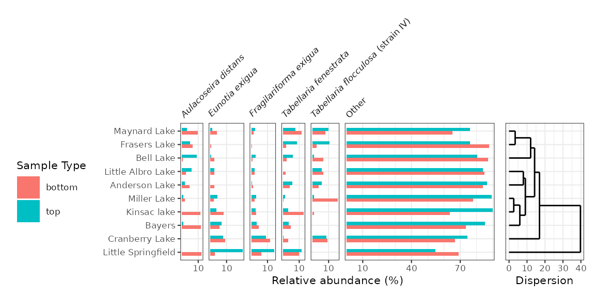